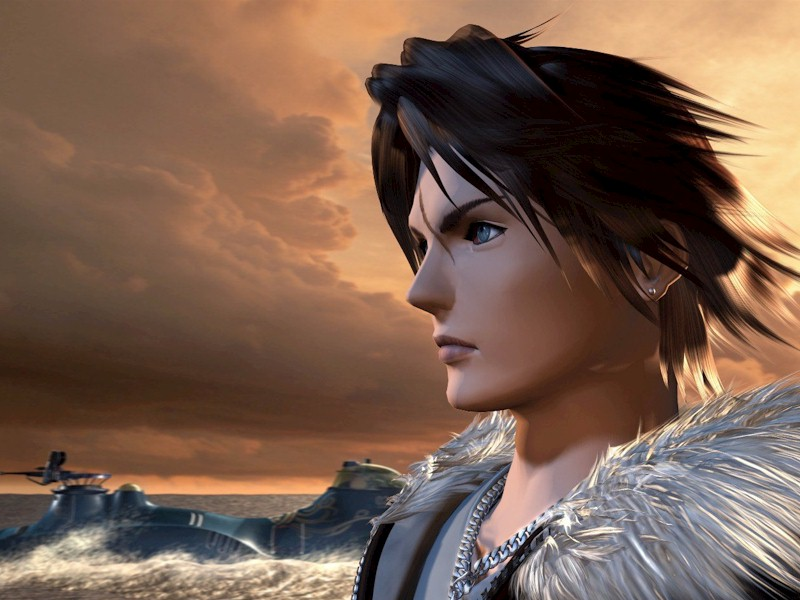
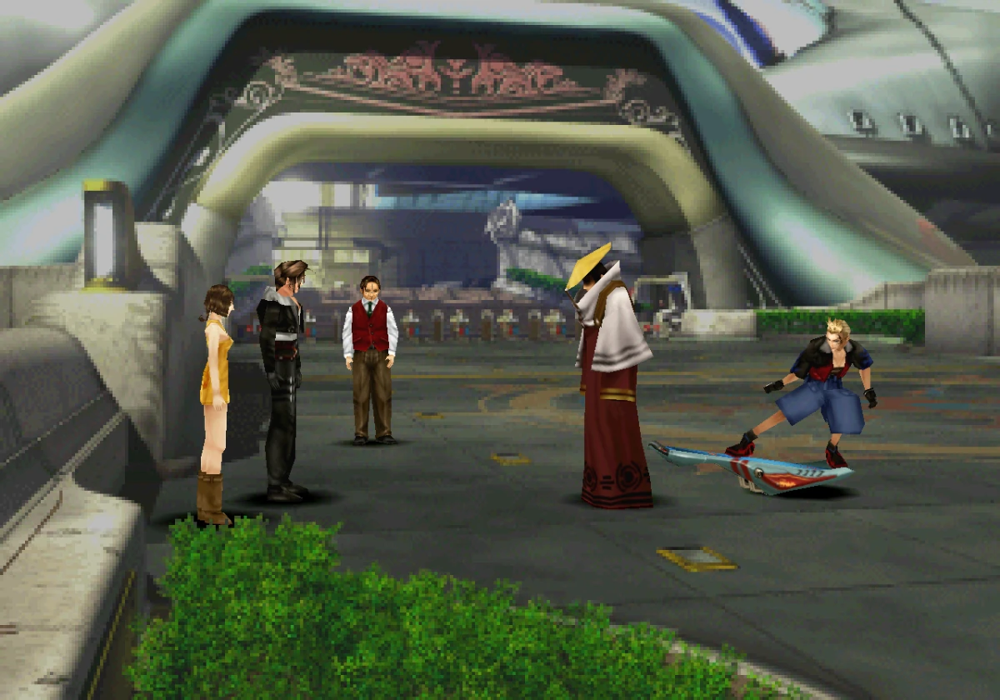
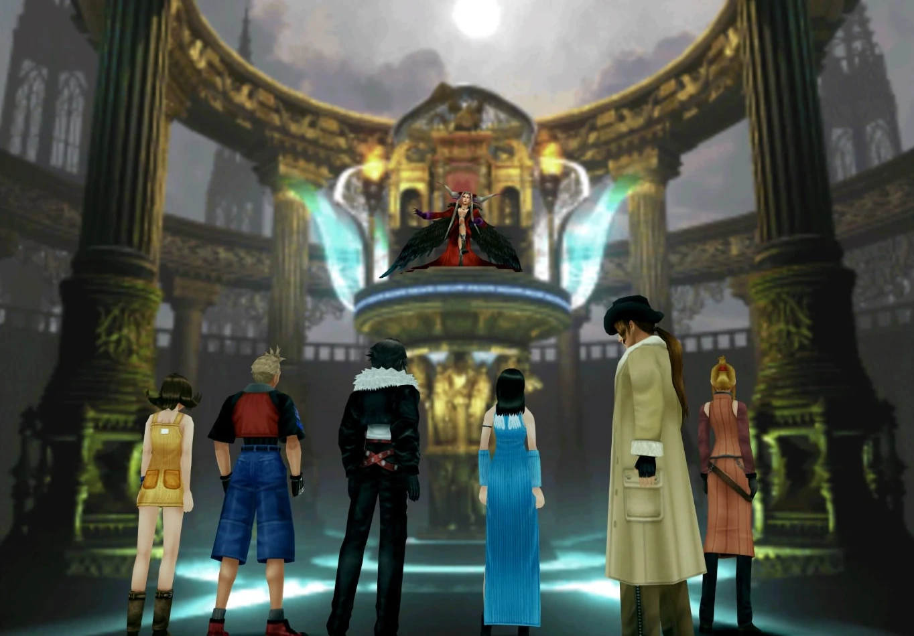

Plot & Story
The story revolves around a group of young mercenaries known as SeeD, who are part of an
organization called Balamb Garden.
The protagonist, Squall Leonhart, is a reserved and skilled SeeD
member who is chosen to lead a team on a mission.
The mission involves assisting a resistance group in the country of Timber, which is
fighting
against the Galbadian Empire.

Squall's team includes Zell Dincht, a passionate martial artist, and
Selphie Tilmitt, an energetic and cheerful girl. They are also joined by Quistis Trepe, an
experienced SeeD instructor, and their mentor, Cid Kramer.

During the mission, Squall and his team encounter a mysterious young woman named Rinoa
Heartilly, who is a member of the Timber resistance group. She seeks their help in thwarting the
Galbadian Empire's plans.

As the story progresses, it becomes clear that there is a larger conflict at play, involving
the
sorceress Edea Kramer, who is being manipulated by a powerful sorceress from the future,
Ultimecia.
The game's narrative also explores Squall's personal growth and his developing relationship with
Rinoa.
 Squall and his team are tasked with confronting Edea and later must deal with Ultimecia's
ambitions to compress time and obtain ultimate power. The game explores themes of time, destiny,
and
personal growth as Squall, initially emotionally distant, gradually opens up to others,
particularly
Rinoa.
Squall and his team are tasked with confronting Edea and later must deal with Ultimecia's
ambitions to compress time and obtain ultimate power. The game explores themes of time, destiny,
and
personal growth as Squall, initially emotionally distant, gradually opens up to others,
particularly
Rinoa.
As the story progresses, the group learns about a mysterious orphanage they all attended as
children and a powerful sorceress from the future named Ultimecia, who seeks to compress time
and
bring about a chaotic future.

The characters travel
to various locations, including the futuristic city of Esthar and the
mysterious Lunatic Pandora research facility, to uncover the truth behind the sorceresses and
time
compression.

The climax of the game involves a final
confrontation with Ultimecia, where Squall and his team
must use their unique abilities, including the Junction System and the power of Guardian Forces
(GFs), to prevent Ultimecia from achieving her apocalyptic goal.

The game's conclusion addresses the consequences of their actions and offers closure to the
character arcs and storylines that have been developed throughout the game. Squall and his
friends
embark on a quest to stop Ultimecia's plans and ultimately prevent time compression.